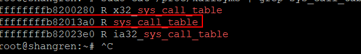
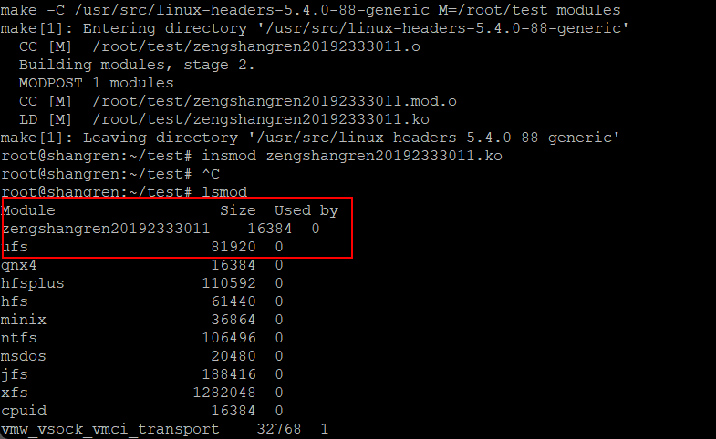
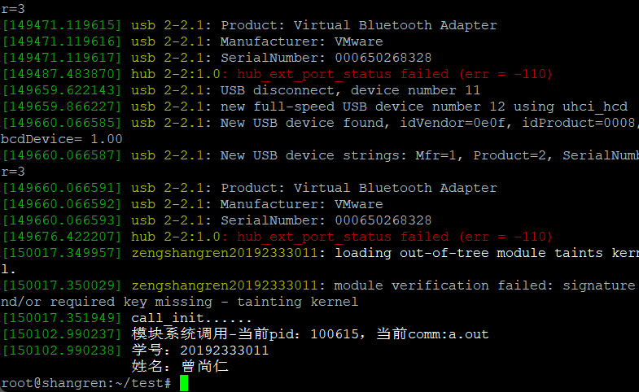

<div class="container-fluid nopadding-x">
  <div class="row nomargin-x">
    <div class="d-none d-lg-block col-lg-2"></div>
    <div class="col-lg-8 nopadding-x-md">
      <div class="container nopadding-x-md" id="board-ctn">
        <div class="py-5" id="board">
          <article class="post-content mx-auto">
            <!-- SEO header -->
            <h1 style="display: none">linux添加内核模块（实现系统调用）</h1>
            
              <p class="note note-info">
                
                  本文最后更新于：9 天前
                
              </p>
            
            <div class="markdown-body">
              <p>在向linux内核中添加一个内核模块之前，需要了解进程调用。</p>
<h1 id="一些预备知识"><a href="#一些预备知识" class="headerlink" title="一些预备知识"></a>一些预备知识</h1><h2 id="进程调用"><a href="#进程调用" class="headerlink" title="进程调用"></a>进程调用</h2><p>它是应用程序和操作系统内核进行交互的最直接、最原始的接口和通道。在遵循一定的规则下，它让进程可以享受到操作系统内核提供的服务，例如申请 I/O 资源以访问相关的硬件、申请共享内存以用于 IPC 等等。<br>系统调用在我们的程序运行中，经常被直接或者间接使用到。我们在程序中经常用到的库函数，大部分是对相关系统调用的进一步抽象和封装，以提高系统调用的使用便利性，例如：在 C/C++语言里，分配虚拟内存的函数 malloc()，实质上是基于晦涩难懂的系统调用brk()/sbrk()而构造的。<br>一旦一个应用程序执行系统调用成功，其 CPU 运行状态将发生变化，由用户层的 Ring3 转移至内核层的 Ring 0（大家可以去搜索一下 X86 体系结构下的 Ring 3 和 Ring 0 的概念，简单来说，内核层次的代码为特权指令，只能在 CPU 的 Ring 0 状态下运行）。如果系统调用顺利完成，CPU 则会由 Ring 0 状态切换回至 Ring 3 状态。<br><strong>添加内核模块</strong>的目的，就是增加一个自己设计的系统调用，并让对应的进程运行在此新内核之上，享受到该系统调用所提供的（简单）服务。</p>
<h2 id="内核模块"><a href="#内核模块" class="headerlink" title="内核模块"></a>内核模块</h2><p>内核模块的编写方式不同于大家在应用层的程序编写方式——main 函数——从头到尾写下去，而是有其固定的编程框架。一般在通过一个特别的 makefile 文件对其编译成功后，会输出后缀名为 ko 的内核模块文件，再利用 insmod 命令将其加载进正在运行的内核即可。（还有一种静态方法可以添加进程调用——源码，找到对应的源码位置，加入新系统调用的入口和相关执行逻辑，之后，重新编译和安装整个新内核）<br>**最后，请注意，此内核模块的功能是：从真正意义上为当前操作系统设计一个新的系统调用（在此内核模块的源码里有相应的加入“新系统调用“的程序语句），然后供上层应用程序所使用（你的应用程序调用了此”接口“），绝不是在内核模块的加载过程中简单地用 printk 来进行一次字符串输出。 **</p>
<h1 id="正文（添加内核模块）"><a href="#正文（添加内核模块）" class="headerlink" title="正文（添加内核模块）"></a>正文（添加内核模块）</h1><h2 id="1-查看syscall-table"><a href="#1-查看syscall-table" class="headerlink" title="1.查看syscall_table"></a>1.查看syscall_table</h2><figure class="highlight bash"><table><tr><td class="gutter hljs"><div class="hljs code-wrapper"><pre><span class="line">1</span><br></pre></div></td><td class="code"><div class="hljs code-wrapper"><pre><code class="hljs bash">sudo cat /proc/kallsyms | grep sys_call_table<br></code></pre></div></td></tr></table></figure>
<p><br>可以发现，syscall_table的地址是ffffffffb82013a0</p>
<h2 id="2-查看可用的系统调用号"><a href="#2-查看可用的系统调用号" class="headerlink" title="2. 查看可用的系统调用号"></a>2. 查看可用的系统调用号</h2><figure class="highlight bash"><table><tr><td class="gutter hljs"><div class="hljs code-wrapper"><pre><span class="line">1</span><br></pre></div></td><td class="code"><div class="hljs code-wrapper"><pre><code class="hljs bash">vim /usr/include/asm/unistd_32.h<br></code></pre></div></td></tr></table></figure>
<p>我使用的是384号。</p>
<h2 id="3-创建c文件和Makefile文件"><a href="#3-创建c文件和Makefile文件" class="headerlink" title="3. 创建c文件和Makefile文件"></a>3. 创建c文件和Makefile文件</h2><h3 id="1-在任意位置创建一个文件夹"><a href="#1-在任意位置创建一个文件夹" class="headerlink" title="1. 在任意位置创建一个文件夹"></a>1. 在任意位置创建一个文件夹</h3><figure class="highlight bash"><table><tr><td class="gutter hljs"><div class="hljs code-wrapper"><pre><span class="line">1</span><br></pre></div></td><td class="code"><div class="hljs code-wrapper"><pre><code class="hljs bash">mkdir /LKM<br></code></pre></div></td></tr></table></figure>
<h3 id="2-然后进入文件夹"><a href="#2-然后进入文件夹" class="headerlink" title="2. 然后进入文件夹"></a>2. 然后进入文件夹</h3><figure class="highlight bash"><table><tr><td class="gutter hljs"><div class="hljs code-wrapper"><pre><span class="line">1</span><br></pre></div></td><td class="code"><div class="hljs code-wrapper"><pre><code class="hljs bash"><span class="hljs-built_in">cd</span> /LKM<br></code></pre></div></td></tr></table></figure>
<h3 id="3-新建c文件，我新建的是zengshangren20192333011-c"><a href="#3-新建c文件，我新建的是zengshangren20192333011-c" class="headerlink" title="3. 新建c文件，我新建的是zengshangren20192333011.c"></a>3. 新建c文件，我新建的是zengshangren20192333011.c</h3><figure class="highlight bash"><table><tr><td class="gutter hljs"><div class="hljs code-wrapper"><pre><span class="line">1</span><br><span class="line">2</span><br></pre></div></td><td class="code"><div class="hljs code-wrapper"><pre><code class="hljs bash"><span class="hljs-comment">#创建文件命令：</span><br>vim zengshangren20192333011.c<br></code></pre></div></td></tr></table></figure>
<p>代码如下，注意在对应地方修改成自己的信息！</p>
<figure class="highlight c"><table><tr><td class="gutter hljs"><div class="hljs code-wrapper"><pre><span class="line">1</span><br><span class="line">2</span><br><span class="line">3</span><br><span class="line">4</span><br><span class="line">5</span><br><span class="line">6</span><br><span class="line">7</span><br><span class="line">8</span><br><span class="line">9</span><br><span class="line">10</span><br><span class="line">11</span><br><span class="line">12</span><br><span class="line">13</span><br><span class="line">14</span><br><span class="line">15</span><br><span class="line">16</span><br><span class="line">17</span><br><span class="line">18</span><br><span class="line">19</span><br><span class="line">20</span><br><span class="line">21</span><br><span class="line">22</span><br><span class="line">23</span><br><span class="line">24</span><br><span class="line">25</span><br><span class="line">26</span><br><span class="line">27</span><br><span class="line">28</span><br><span class="line">29</span><br><span class="line">30</span><br><span class="line">31</span><br><span class="line">32</span><br><span class="line">33</span><br><span class="line">34</span><br><span class="line">35</span><br><span class="line">36</span><br><span class="line">37</span><br><span class="line">38</span><br><span class="line">39</span><br><span class="line">40</span><br><span class="line">41</span><br><span class="line">42</span><br><span class="line">43</span><br><span class="line">44</span><br><span class="line">45</span><br><span class="line">46</span><br><span class="line">47</span><br><span class="line">48</span><br><span class="line">49</span><br><span class="line">50</span><br><span class="line">51</span><br><span class="line">52</span><br><span class="line">53</span><br><span class="line">54</span><br><span class="line">55</span><br><span class="line">56</span><br></pre></div></td><td class="code"><div class="hljs code-wrapper"><pre><code class="hljs c"><span class="hljs-meta">#<span class="hljs-meta-keyword">include</span> <span class="hljs-meta-string">&lt;linux/kernel.h&gt;</span></span><br><span class="hljs-meta">#<span class="hljs-meta-keyword">include</span> <span class="hljs-meta-string">&lt;linux/init.h&gt;</span></span><br><span class="hljs-meta">#<span class="hljs-meta-keyword">include</span> <span class="hljs-meta-string">&lt;linux/module.h&gt;</span></span><br><span class="hljs-meta">#<span class="hljs-meta-keyword">include</span> <span class="hljs-meta-string">&lt;linux/unistd.h&gt;</span></span><br><span class="hljs-meta">#<span class="hljs-meta-keyword">include</span> <span class="hljs-meta-string">&lt;linux/sched.h&gt;</span></span><br>  <br>MODULE_LICENSE(<span class="hljs-string">&quot;Dual BSD/GPL&quot;</span>);<br> <br><span class="hljs-meta">#<span class="hljs-meta-keyword">define</span> SYS_CALL_TABLE_ADDRESS 0xffffffffb82013a0   <span class="hljs-comment">//sys_call_table对应的地址</span></span><br><span class="hljs-meta">#<span class="hljs-meta-keyword">define</span> NUM 384  <span class="hljs-comment">//系统调用号为384</span></span><br><span class="hljs-keyword">int</span> orig_cr0;  <span class="hljs-comment">//用来存储cr0寄存器原来的值</span><br><span class="hljs-keyword">unsigned</span> <span class="hljs-keyword">long</span> *sys_call_table_my=<span class="hljs-number">0</span>;<br><span class="hljs-function"><span class="hljs-keyword">static</span> <span class="hljs-title">int</span><span class="hljs-params">(*anything_saved)</span><span class="hljs-params">(<span class="hljs-keyword">void</span>)</span></span>;  <span class="hljs-comment">//定义一个函数指针，用来保存一个系统调用</span><br><span class="hljs-function"><span class="hljs-keyword">static</span> <span class="hljs-keyword">int</span> <span class="hljs-title">clear_cr0</span><span class="hljs-params">(<span class="hljs-keyword">void</span>)</span> <span class="hljs-comment">//使cr0寄存器的第17位设置为0（内核空间可写）</span></span><br><span class="hljs-function"></span>&#123;<br>    <span class="hljs-keyword">unsigned</span> <span class="hljs-keyword">int</span> cr0=<span class="hljs-number">0</span>;<br>    <span class="hljs-keyword">unsigned</span> <span class="hljs-keyword">int</span> ret;<br>    <span class="hljs-function"><span class="hljs-keyword">asm</span> <span class="hljs-title">volatile</span><span class="hljs-params">(<span class="hljs-string">&quot;movq %%cr0,%%rax&quot;</span>:<span class="hljs-string">&quot;=a&quot;</span>(cr0))</span></span>;<span class="hljs-comment">//将cr0寄存器的值移动到eax寄存器中，同时输出到cr0变量中</span><br>    ret=cr0;<br>    cr0&amp;=<span class="hljs-number">0xfffffffffffeffff</span>;<span class="hljs-comment">//将cr0变量值中的第17位清0,将修改后的值写入cr0寄存器</span><br>    <span class="hljs-function"><span class="hljs-keyword">asm</span> <span class="hljs-title">volatile</span><span class="hljs-params">(<span class="hljs-string">&quot;movq %%rax,%%cr0&quot;</span>::<span class="hljs-string">&quot;a&quot;</span>(cr0))</span></span>;<span class="hljs-comment">//将cr0变量的值作为输入，输入到寄存器eax中，同时移动到寄存器cr0中</span><br>    <span class="hljs-keyword">return</span> ret;<br>&#125;<br> <br><span class="hljs-function"><span class="hljs-keyword">static</span> <span class="hljs-keyword">void</span> <span class="hljs-title">setback_cr0</span><span class="hljs-params">(<span class="hljs-keyword">int</span> val)</span> <span class="hljs-comment">//使cr0寄存器设置为内核不可写</span></span><br><span class="hljs-function"></span>&#123;<br>    <span class="hljs-function"><span class="hljs-keyword">asm</span> <span class="hljs-title">volatile</span><span class="hljs-params">(<span class="hljs-string">&quot;movq %%rax,%%cr0&quot;</span>::<span class="hljs-string">&quot;a&quot;</span>(val))</span></span>;<br>&#125;<br> <br><span class="hljs-function">asmlinkage <span class="hljs-keyword">long</span> <span class="hljs-title">sys_mycall</span><span class="hljs-params">(<span class="hljs-keyword">void</span>)</span> <span class="hljs-comment">//定义自己的系统调用</span></span><br><span class="hljs-function"></span>&#123;   <br>    printk(<span class="hljs-string">&quot;模块系统调用-当前pid：%d，当前comm:%s\n&quot;</span>,current-&gt;pid,current-&gt;comm);<br>    printk(<span class="hljs-string">&quot;学号：20192333011\n姓名：曾尚仁\n&quot;</span>);<br>    <span class="hljs-keyword">return</span> current-&gt;pid;    <br>&#125;<br><span class="hljs-function"><span class="hljs-keyword">static</span> <span class="hljs-keyword">int</span> __init <span class="hljs-title">call_init</span><span class="hljs-params">(<span class="hljs-keyword">void</span>)</span></span><br><span class="hljs-function"></span>&#123;<br>    sys_call_table_my=(<span class="hljs-keyword">unsigned</span> <span class="hljs-keyword">long</span>*)(SYS_CALL_TABLE_ADDRESS);<br>    printk(<span class="hljs-string">&quot;call_init......\n&quot;</span>);<br>    anything_saved=(<span class="hljs-keyword">int</span>(*)(<span class="hljs-keyword">void</span>))(sys_call_table_my[NUM]);<span class="hljs-comment">//保存系统调用表中的NUM位置上的系统调用</span><br>    orig_cr0=clear_cr0();<span class="hljs-comment">//使内核地址空间可写</span><br>    sys_call_table_my[NUM]=(<span class="hljs-keyword">unsigned</span> <span class="hljs-keyword">long</span>) &amp;sys_mycall;<span class="hljs-comment">//用自己的系统调用替换NUM位置上的系统调用</span><br>    setback_cr0(orig_cr0);<span class="hljs-comment">//使内核地址空间不可写</span><br>    <span class="hljs-keyword">return</span> <span class="hljs-number">0</span>;<br>&#125;<br> <br><span class="hljs-function"><span class="hljs-keyword">static</span> <span class="hljs-keyword">void</span> __exit <span class="hljs-title">call_exit</span><span class="hljs-params">(<span class="hljs-keyword">void</span>)</span></span><br><span class="hljs-function"></span>&#123;<br>    printk(<span class="hljs-string">&quot;call_exit......\n&quot;</span>);<br>    orig_cr0=clear_cr0();<br>    sys_call_table_my[NUM]=(<span class="hljs-keyword">unsigned</span> <span class="hljs-keyword">long</span>)anything_saved;<span class="hljs-comment">//将系统调用恢复</span><br>    setback_cr0(orig_cr0);<br>&#125;<br> <br>module_init(call_init);<br>module_exit(call_exit);<br></code></pre></div></td></tr></table></figure>
<h3 id="4-新建Makefile文件，注意第一个字母一定要大写！"><a href="#4-新建Makefile文件，注意第一个字母一定要大写！" class="headerlink" title="4. 新建Makefile文件，注意第一个字母一定要大写！"></a>4. 新建Makefile文件，注意第一个字母一定要大写！</h3><figure class="highlight bash"><table><tr><td class="gutter hljs"><div class="hljs code-wrapper"><pre><span class="line">1</span><br><span class="line">2</span><br><span class="line">3</span><br><span class="line">4</span><br><span class="line">5</span><br><span class="line">6</span><br><span class="line">7</span><br></pre></div></td><td class="code"><div class="hljs code-wrapper"><pre><code class="hljs bash">obj-m += zengshangren20192333011.o<br>KERNELBUILD +=/usr/src/linux-headers-5.4.0-88-generic<br>all:<br>        make -C <span class="hljs-variable">$&#123;KERNELBUILD&#125;</span> M=<span class="hljs-variable">$&#123;shell pwd&#125;</span> modules<br>clean:<br>        rm -f *.ko *.o *.mod.o *mod.c *.symvers<br>CONFIG_MODULE_SIG=n<br></code></pre></div></td></tr></table></figure>
<p>注意：</p>
<ul>
<li>最后一句CONFIG_MODULE_SIG=n，是由于Linux内核3.7之后添加了内核签名机制，现在的内核只加载带有公钥的合法模块，因此可以尝试引入公钥mokutil –import public_key.der。当然，为了方便，Linux中默认CONFIG_MODULE_SIG = y即签名开启状态，因此可以在内核代码的config文件中找到并将其改为CONFIG_MODULE_SIG = n<br>这样就不会报错啦。如果有时间还是要学一学如何签名。</li>
<li>注意Makefile的大写字母M</li>
</ul>
<h2 id="4-编译Makefile文件"><a href="#4-编译Makefile文件" class="headerlink" title="4. 编译Makefile文件"></a>4. 编译Makefile文件</h2><p>直接在/LKM下输入命令“make”</p>
<figure class="highlight bash"><table><tr><td class="gutter hljs"><div class="hljs code-wrapper"><pre><span class="line">1</span><br></pre></div></td><td class="code"><div class="hljs code-wrapper"><pre><code class="hljs bash">make<br></code></pre></div></td></tr></table></figure>

<h2 id="5-添加、移除模块"><a href="#5-添加、移除模块" class="headerlink" title="5. 添加、移除模块"></a>5. 添加、移除模块</h2><figure class="highlight bash"><table><tr><td class="gutter hljs"><div class="hljs code-wrapper"><pre><span class="line">1</span><br><span class="line">2</span><br><span class="line">3</span><br><span class="line">4</span><br><span class="line">5</span><br></pre></div></td><td class="code"><div class="hljs code-wrapper"><pre><code class="hljs bash"><span class="hljs-comment">#添加模块</span><br>insmod zengshangren20192333011.ko<br><br><span class="hljs-comment">#移除模块</span><br>rmmod zengshangren20192333011.ko<br></code></pre></div></td></tr></table></figure>
<h2 id="6-如何查看模块是否被添加？"><a href="#6-如何查看模块是否被添加？" class="headerlink" title="6. 如何查看模块是否被添加？"></a>6. 如何查看模块是否被添加？</h2><figure class="highlight bash"><table><tr><td class="gutter hljs"><div class="hljs code-wrapper"><pre><span class="line">1</span><br></pre></div></td><td class="code"><div class="hljs code-wrapper"><pre><code class="hljs bash">lsmod<br></code></pre></div></td></tr></table></figure>
<p></p>
<h2 id="7-在应用层调用"><a href="#7-在应用层调用" class="headerlink" title="7. 在应用层调用"></a>7. 在应用层调用</h2><p>编写homework.c</p>
<figure class="highlight c"><table><tr><td class="gutter hljs"><div class="hljs code-wrapper"><pre><span class="line">1</span><br><span class="line">2</span><br><span class="line">3</span><br><span class="line">4</span><br><span class="line">5</span><br><span class="line">6</span><br><span class="line">7</span><br><span class="line">8</span><br><span class="line">9</span><br><span class="line">10</span><br><span class="line">11</span><br><span class="line">12</span><br><span class="line">13</span><br><span class="line">14</span><br></pre></div></td><td class="code"><div class="hljs code-wrapper"><pre><code class="hljs c"><span class="hljs-meta">#<span class="hljs-meta-keyword">include</span><span class="hljs-meta-string">&lt;stdio.h&gt;</span></span><br><span class="hljs-meta">#<span class="hljs-meta-keyword">include</span><span class="hljs-meta-string">&lt;stdlib.h&gt;</span></span><br><span class="hljs-meta">#<span class="hljs-meta-keyword">include</span><span class="hljs-meta-string">&lt;linux/kernel.h&gt;</span></span><br><span class="hljs-meta">#<span class="hljs-meta-keyword">include</span><span class="hljs-meta-string">&lt;sys/syscall.h&gt;</span></span><br><span class="hljs-meta">#<span class="hljs-meta-keyword">include</span><span class="hljs-meta-string">&lt;unistd.h&gt;</span></span><br> <br><span class="hljs-function"><span class="hljs-keyword">int</span> <span class="hljs-title">main</span><span class="hljs-params">()</span></span><br><span class="hljs-function"></span>&#123;<br>        <span class="hljs-keyword">unsigned</span> <span class="hljs-keyword">long</span> x = <span class="hljs-number">0</span>;<br>        x = syscall(<span class="hljs-number">384</span>);        <span class="hljs-comment">//测试384号系统调用</span><br>        <span class="hljs-built_in">printf</span>(<span class="hljs-string">&quot;zengshangren syscall : %ld\n&quot;</span>, x);<br>        <span class="hljs-keyword">return</span> <span class="hljs-number">0</span>;<br>&#125;<br><br></code></pre></div></td></tr></table></figure>
<h2 id="8-编译并运行"><a href="#8-编译并运行" class="headerlink" title="8. 编译并运行"></a>8. 编译并运行</h2><p>！<a href="gccHomework.png"></a></p>
<h2 id="查看是否添加成功"><a href="#查看是否添加成功" class="headerlink" title="查看是否添加成功"></a>查看是否添加成功</h2><p>输入命令：</p>
<figure class="highlight bash"><table><tr><td class="gutter hljs"><div class="hljs code-wrapper"><pre><span class="line">1</span><br></pre></div></td><td class="code"><div class="hljs code-wrapper"><pre><code class="hljs bash">dmesg<br></code></pre></div></td></tr></table></figure>
<p>结果如下<br></p>

            </div>
            <hr>
            <div>
              <div class="post-metas mb-3">
                
                
                  <div class="post-meta">
                    <i class="iconfont icon-tags"></i>
                    
                      <a class="hover-with-bg" href="/tags/linux/">linux</a>
                    
                  </div>
                
              </div>
              
                <p class="note note-warning">
                  
                    本博客所有文章除特别声明外，均采用 <a target="_blank" href="https://creativecommons.org/licenses/by-sa/4.0/deed.zh" rel="nofollow noopener noopener">CC BY-SA 4.0 协议</a> ，转载请注明出处！
                  
                </p>
              
              
                <div class="post-prevnext">
                  <article class="post-prev col-6">
                    
                    
                      <a href="/2021/11/09/linux%E5%AE%9E%E7%8E%B0%E8%BF%9B%E7%A8%8B%E9%80%9A%E4%BF%A1%E7%9A%84%E5%9B%9B%E7%A7%8D%E5%B8%B8%E8%A7%81%E6%96%B9%E5%BC%8F/">
                        <i class="iconfont icon-arrowleft"></i>
                        <span class="hidden-mobile">linux实现进程通信的四种常见方式</span>
                        <span class="visible-mobile">上一篇</span>
                      </a>
                    
                  </article>
                  <article class="post-next col-6">
                    
                    
                      <a href="/2021/11/08/%E8%BF%9C%E7%A8%8B%E8%BF%9E%E6%8E%A5linux%E8%BF%90%E8%A1%8Cjar%E5%8C%85%EF%BC%8C%E5%9C%A8%E5%85%B3%E9%97%AD%E7%BB%88%E7%AB%AF%E5%90%8Ejar%E5%8C%85%E5%81%9C%E6%AD%A2%E8%BF%90%E8%A1%8C%E6%80%8E%E4%B9%88%E5%8A%9E%EF%BC%9F/">
                        <span class="hidden-mobile">远程连接linux运行jar包，在关闭终端后jar包停止运行怎么办？</span>
                        <span class="visible-mobile">下一篇</span>
                        <i class="iconfont icon-arrowright"></i>
                      </a>
                    
                  </article>
                </div>
              
            </div>

            
          </article>
        </div>
      </div>
    </div>
    
      <div class="d-none d-lg-block col-lg-2 toc-container" id="toc-ctn">
        <div id="toc">
  <p class="toc-header"><i class="iconfont icon-list"></i>&nbsp;目录</p>
  <div class="toc-body" id="toc-body"></div>
</div>

      </div>
    
  </div>
</div>

<!-- Custom -->

